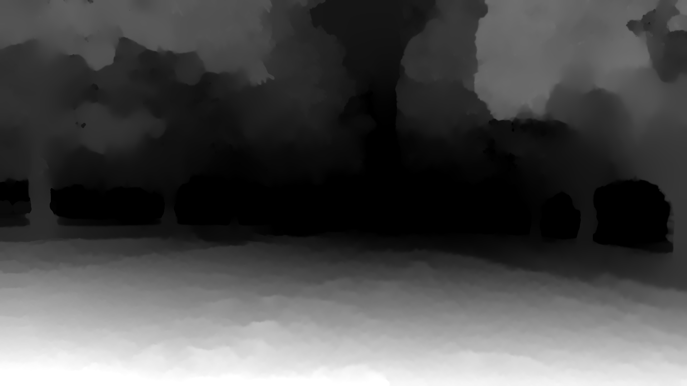

The Low-Light Agricultural Dataset
This web page presents a low-light agricultural dataset from a Macadamia orchard located in McLeans Ridges, NSW 2480, Australia, which was recorded during a day of abundant sunshine. However, the resultant sequence of images exhibited underexposure due to the presence of shading caused by the trees, as depicted in the below carousel. The dataset was collected onboard with a retrofitted TORO Timecutter Zero Turn mower equipped with a ZED stereo camera.

Sample left camera frame of the dataset.

Depth map of first frame of the dataset.
Download
| # | Dataset | Calibration Files | Description | Size |
|---|---|---|---|---|
| 1 | Left + Right | Calibration File | Color Left and Right Sequence | 13.1GB |
| 2 | Left + Depth | Calibration File | Color Left and Depth Sequence | 7.2GB |
| 3 | SVO Raw File | Calibration File | SVO Compressed File | 8.2GB |
BibTeX Citation
@article{Islam2023AGRISLAM,
title={AGRI-SLAM: a real-time stereo visual SLAM for agricultural environment},
author={Rafiqul Islam and Habibullah Habibullah and Tagor Hossain},
journal={Autonomous Robots},
year={2023},
volume={47},
pages={649 - 668},
url={https://doi.org/10.1007/s10514-023-10110-y}
}
License
All data in the dataset is licensed under a Creative Commons 4.0 Attribution License (CC BY 4.0)